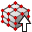
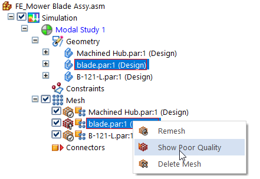
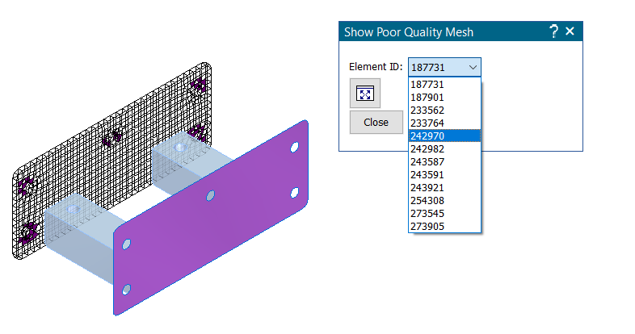
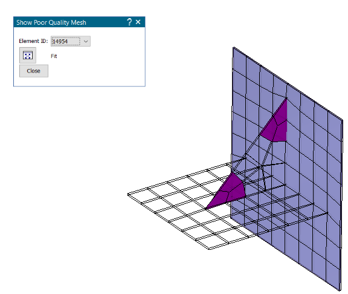

Identifying areas of poor mesh quality
To identify the areas where mesh sizing is needed and to update the mesh after sizing is applied, you can use the following commands. These are available based on meshing results when an object is selected under the Mesh node on the Simulation pane:
-
Show Poor Quality
-
Remesh
-
 Delete Mesh
Delete Mesh
The Show Poor Quality command is not available for tetrahedral meshes when you select the Generate only Surface results (faster) check box in the Create Study dialog box, under Results Options.
Using the Show Poor Quality command
The Show Poor Quality shortcut command is available only when the quality of the mesh that was generated is poor and this status icon is displayed:

.You can use the Show Poor Quality command to select and zoom to each of the poor-quality nodes.
-
Right-click the mesh node where this status icon is displayed , and choose Show Poor Quality.

-
On the command bar, select a node ID from the Element ID list, and then click Fit to zoom to the area of poor quality.

In the graphics window, good quality mesh elements are displayed in translucent white. Poor-quality mesh elements are displayed in solid dark magenta.
-
After locating the mesh elements that need to be improved, click Close on the command bar. The next step is to refine the mesh. For more information, see Mesh sizing.
If your study is for a sheet metal document (.psm) that is meshed with a Surface mesh, the Show Poor Quality command bar does not list the individual element IDs where the mesh is poor quality. You can still use the Solid Edge zoom commands to locate and examine the areas of poor-quality mesh in the graphics window.

For legacy files, poor-quality elements are reported based on either the Jacobian or the Nastran quality checks. While the Check Element Quality command refers to only Nastran quality checks. This produces different results using the Show Poor Quality and Check Element Quality commands.
Using the Remesh command
The Remesh command is available on the shortcut menu of individual parts in an assembly. You can use the Remesh command for:
-
Parts that failed to mesh the first time.
-
Parts which have a poor-quality mesh.
After you apply mesh sizing, or simplify the geometry, or change the meshing options, you can use the Remesh command to update the mesh just for the selected part, rather than all of the bodies in the study.
In a part or sheet metal file, use the Mesh command to remesh the model after making changes to the part.
Using the Delete Mesh command
Deleting the mesh enables you to remesh using the same parameters, without producing an error.
-
In a part, sheet metal, or assembly model, you can right-click a single mesh and choose the Simulation pane→Mesh node→
Delete Mesh command. -
In an assembly, you can delete all meshes at once by right-clicking the top-level Mesh node and selecting the
 Delete All Mesh command.
Delete All Mesh command.
How do I
Mesh the modelActivity: Use subjective mesh sizing
Activity: Apply a surface mesh to a sheet metal part
Activity: Size the mesh on an edge
Activity: Size the mesh on a surface
Learn more
MeshesMesh sizing
Examining the mesh
Look up more details
Mesh dialog boxMesh Options dialog box
Body Size dialog box
Edge Size dialog box
Surface Size dialog box
Check Element Quality